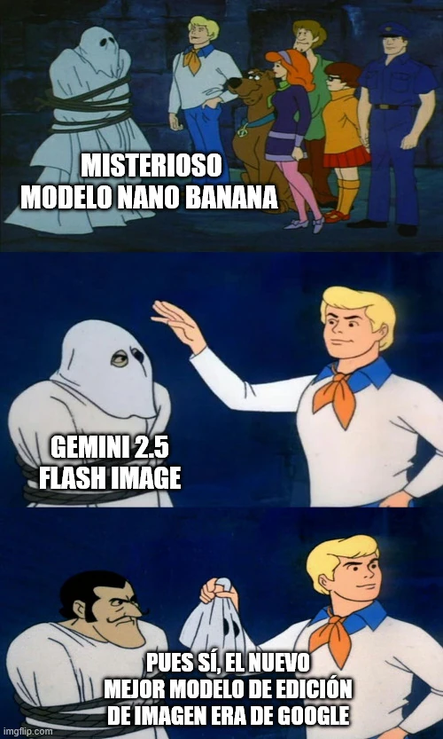

estrategIA #101 ·
El misterio detrás de Nano Banana
El contexto
Nano Banana apareció primero como un modelo de imágenes cuya procedencia no estaba clara. La edición contó que era Gemini 2.5 Flash Image, de Google. La escena de Scooby-Doo lo convierte en un misterio resuelto al quitar la máscara al personaje: por fin se sabe quién estaba detrás.
Publicado en: estrategIA #101 — Nano banana y el nuevo horizonte de la imagen con IA
Leer el texto de la imagen
MISTERIOSO MODELO NANO BANANA GEMINI 2.5 FLASH IMAGE PUES SÍ, EL NUEVO MEJOR MODELO DE EDICIÓN DE IMAGEN ERA DE GOOGLE
Marca de la herramienta visible en el original: imgflip.com.